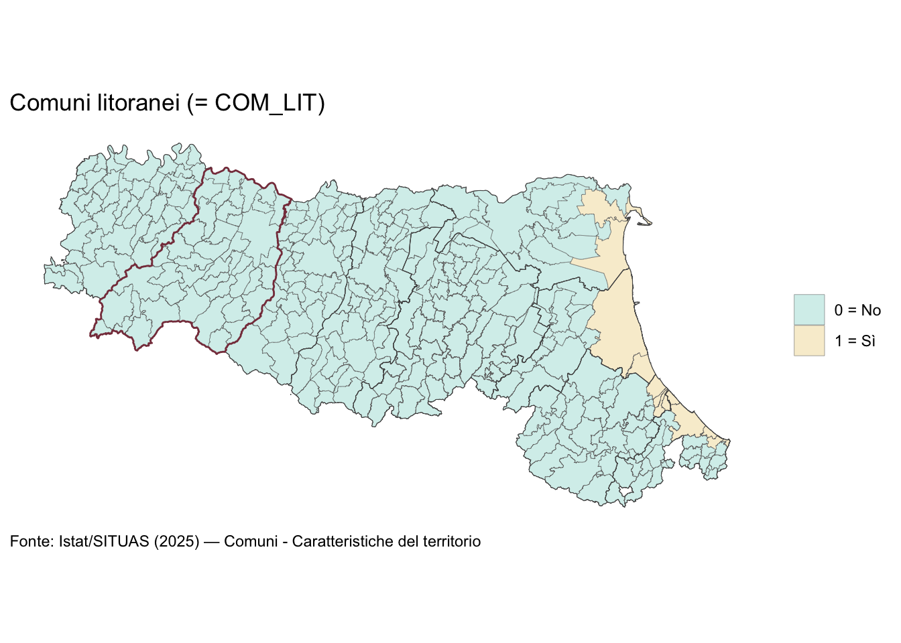
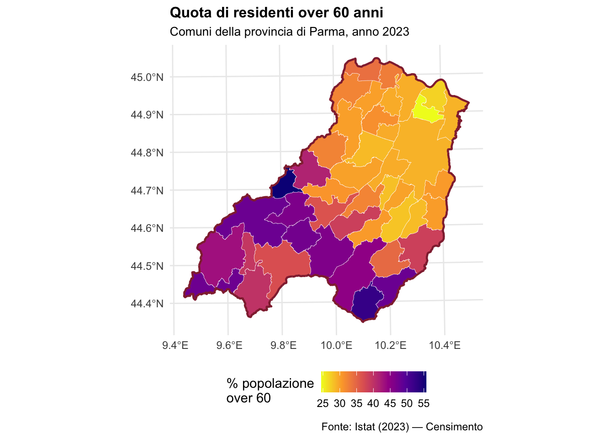
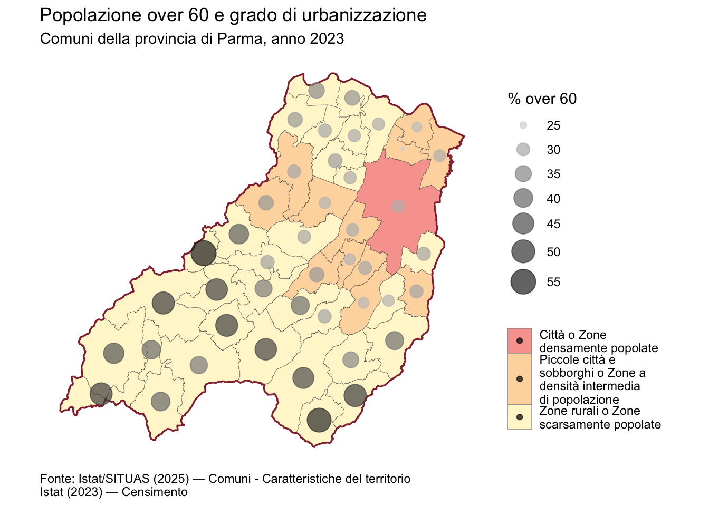
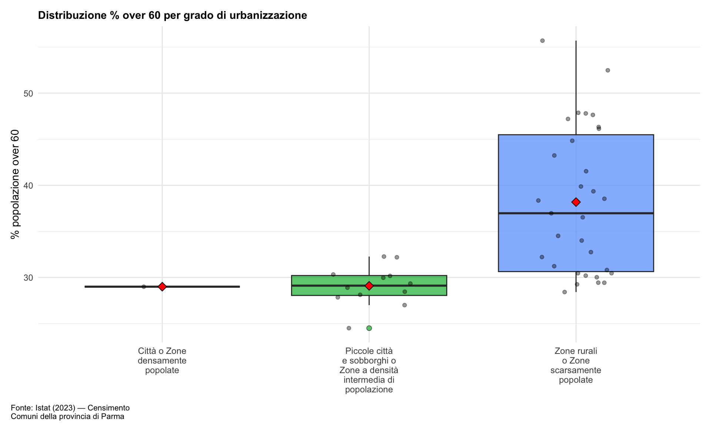
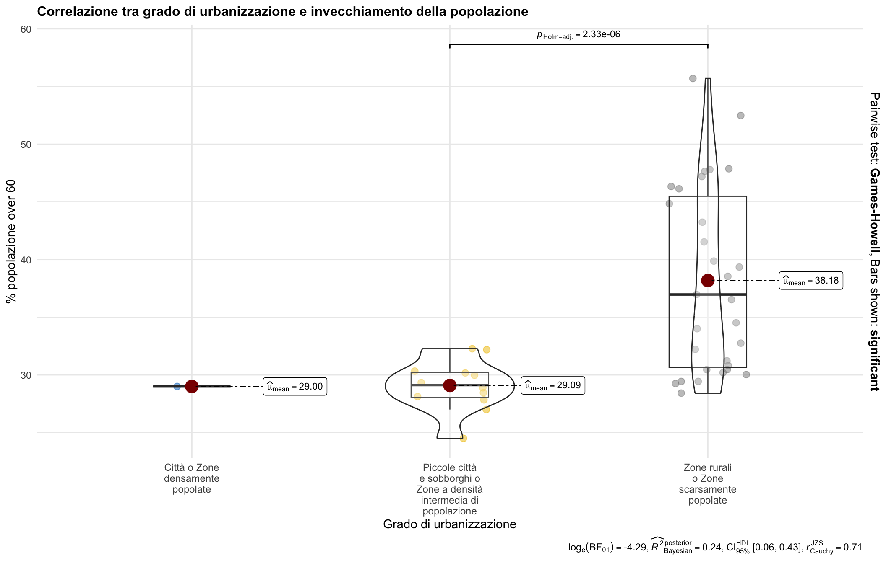

Mappe basate su confini e caratteristiche dei comuni
Materiale intermedio su dati geografici con R
R packg
leggi shp files per Emilia-Romagna
FONTE: output di map/01_istat_shp_situas_cens.qmd
leggi caratt comuni Ita
FONTE: output di map/01_istat_shp_situas_cens.qmd
leggi dati censimento
FONTE: output di map/01_istat_shp_situas_cens.qmd
Join comuni ER + caratt comuni Ita
OKKIO: qui avrei le caratteristiche di TUTTI i comuni Ita, ma mi tengo solo quelle di Emilia-Romagna. Entrambe qs df sono sf con geometria.
____
Prep linee PROVINCE
I confini delle PROV si possono desumere dai comuni con st_union() in summarise()
OKKIO: + con sf, quando fai summarise() su gruppi le geometrie dei comuni nel gruppo vengono unite (st_union()), quindi passi da n comuni → 1 poligono per provincia, e gli attributi vengono riassunti per gruppo (in questo caso hai solo COD_PROV, quindi rimane quello). + .groups = "drop" ottieni un tibble sf non raggruppato
[Map/Func] mappa con dummy (COM_ISO, COM_LIT, ZONE_COST_2021)
[Map] Dummy ZONE_COST_2021
[Map/Func] mappa con fattori (DEGURBA_2021, ZONA_ALT)
[Map] Fattore ZONA_ALT

[Map] Fattore DEGURBA_2021

___
Aggiungiamo variabile continua
[Prep] Dati popolazione 2023 + Fattore DEGURBA_2021 per comuni Parma
[Map] Variabile continua % Popolazione over 60 anni

[Map 1/2] Popolazione over 60 anni + Grado di urbanizzazione

[Map 2/2] Popolazione over 60 anni + Grado di urbanizzazione

[Stats] Correlazione tra urbanizzazione e invecchiamento

[Stats/ggstatsplot] Visualizzazione con test integrati
